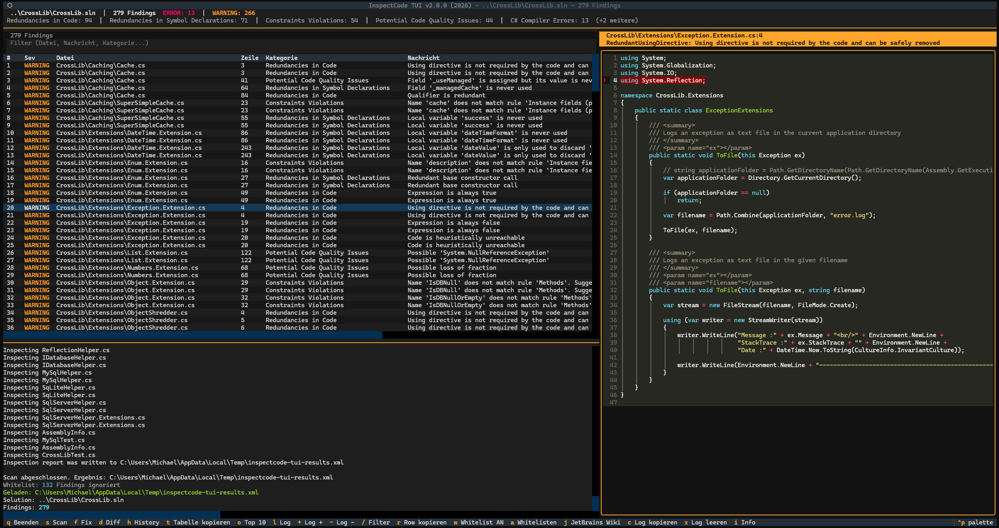
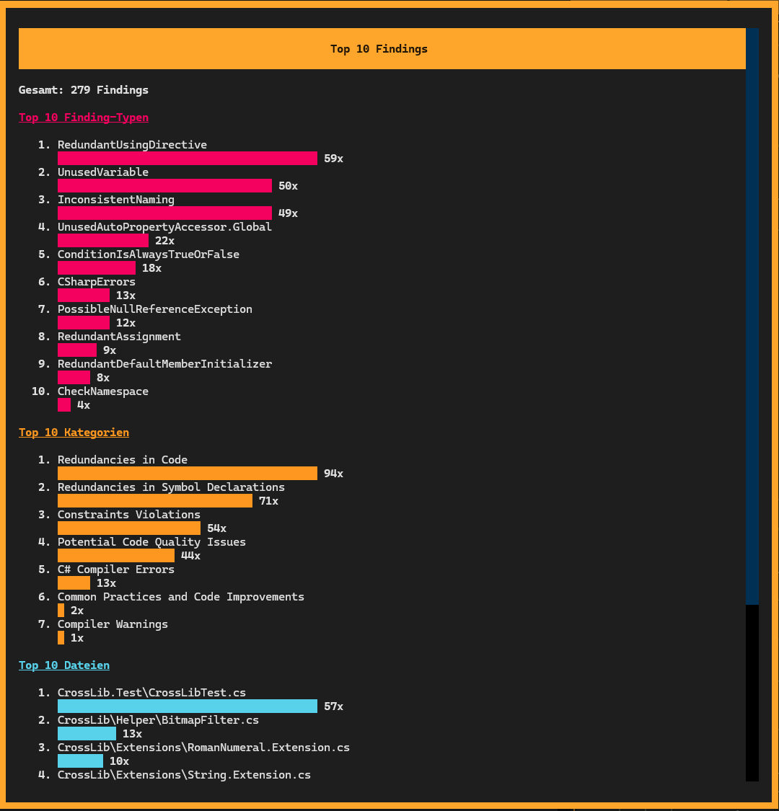
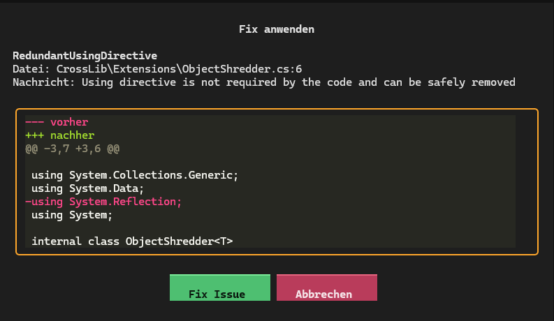
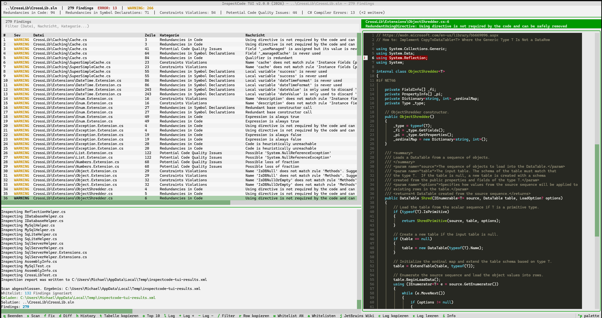
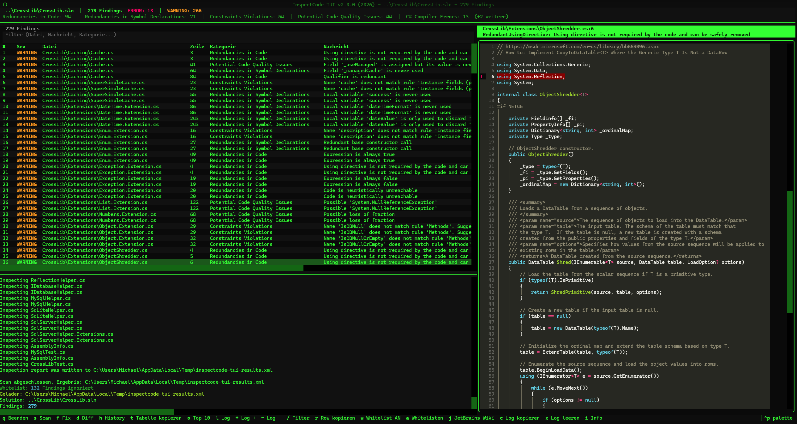

Terminal-UI zum Durchsuchen und Beheben von C# und .NET-Problemen mit InspectCode © von JetBrains. Findings filtern, Quellcode inspizieren, Issues automatisch fixen — alles im Terminal.
InspectCode findet Laufzeit-Bugs, die kein Linter erkennt: Null-Referenz-Pfade, toter Code, moegliche Exceptions. Dieses Tool gibt dir eine interaktive Oberflaeche fuer das Kommandozeilentool von JetBrains.
Findings durchsuchen, Code inspizieren, Issues fixen — mit Retro-Themes von C64 bis BeOS.





Hunderte Findings durchsuchen, inspizieren und beheben — ohne IDE.
Filterbare Tabelle mit Severity-Farben. Quellcode mit Syntax-Highlighting und automatischem Sprung zur betroffenen Zeile.
11 Issue-Typen automatisch beheben — mit Diff-Vorschau vor dem Anwenden. Git ist dein Sicherheitsnetz.
jb inspectcode direkt starten mit Live-Log und Fortschritt. Git-Commit-Modus fuer geaenderte Dateien.
Haeufigste Finding-Typen, Kategorien und Dateien auf einen Blick als Balkendiagramm.
Bekannte Issues per whitelist.json ignorieren. Ein/Aus-Toggle und Hinzufuegen direkt in der TUI.
C64, Amiga, Atari ST, IBM Terminal, NeXTSTEP, BeOS — per Theme-Picker wechseln.
Deutsch und Englisch. Umschaltbar mit --lang en. Die Sprachwahl wird gespeichert.
Alles per Tastatur — keine Maus noetig.
| Taste | Aktion |
|---|---|
| S | Scan starten |
| F | Fix anwenden |
| D | Diff-Vorschau |
| W | Whitelist AN/AUS |
| A | Finding zur Whitelist hinzufuegen |
| J | JetBrains Wiki oeffnen |
| H | History-Dialog |
| O | Top-10-Chart |
| / | Filter fokussieren |
| R | Zeile kopieren |
| T | Tabelle kopieren |
| L | Log ein-/ausblenden |
| + − | Log vergroessern / verkleinern |
| Ctrl+P | Theme wechseln |
| Q | Beenden |
11 Issue-Typen mit einem Tastendruck fixen. Diff-Vorschau inklusive.
| Issue-Typ | Fix |
|---|---|
| RedundantUsingDirective | Zeile entfernen |
| UnusedVariable | Zeile entfernen |
| RedundantAssignment | Zeile entfernen |
| HeuristicUnreachableCode | Zeile entfernen |
| EmptyConstructor | Konstruktor-Block entfernen |
| RedundantBaseConstructorCall | : base() entfernen |
| RedundantDefaultMemberInitializer | = 0 / null / false / default entfernen |
| PossibleIntendedRethrow | throw ex; → throw; |
| RedundantBaseQualifier | base. Prefix entfernen |
| ConstantConditionalAccessQualifier | ?. → . |
| StringIndexOfIsCultureSpecific.1 | StringComparison.Ordinal hinzufuegen |
Mit Ctrl+P durch die Themes wechseln. Jedes Theme basiert auf einem klassischen System.
Python, Textual, Clean Architecture.
Waehle deine bevorzugte Installationsmethode.
Kein Python noetig
Keine Abhaengigkeiten noetig